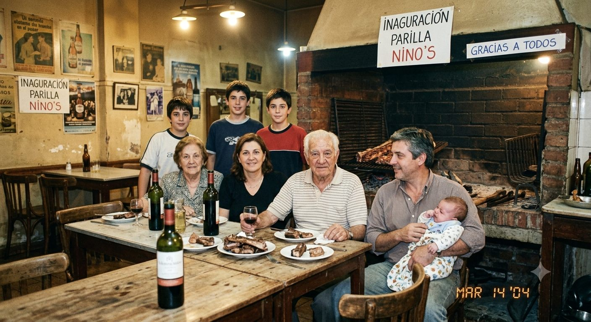
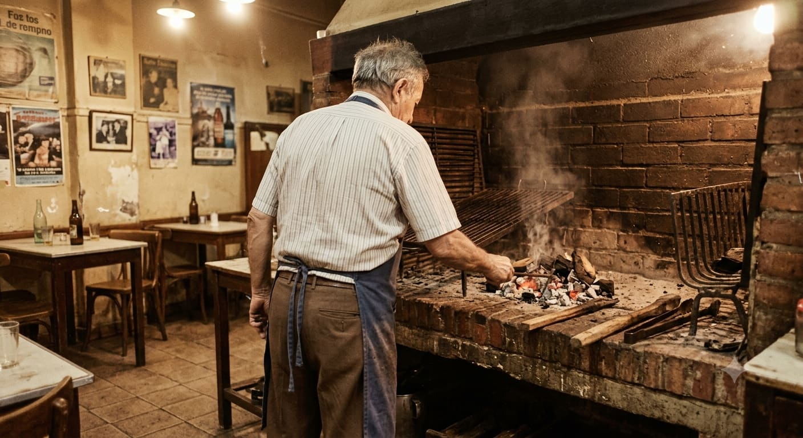
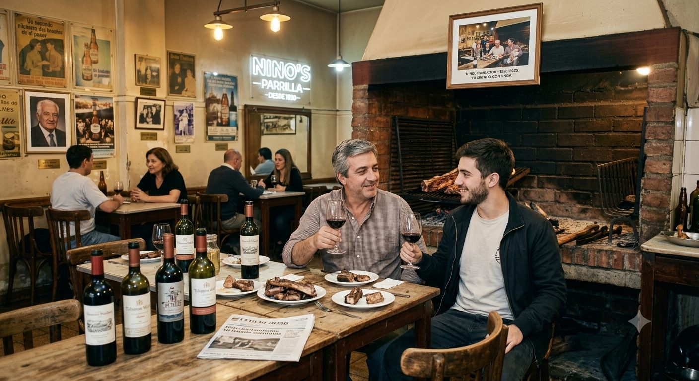

Villa Urquiza · 40 años al calor de las brasas
Un rincón del barrio que no cambia.
Lo de siempre en casa: recetas de toda la vida, hechas a las brasas.
Los precios pueden tener alguna variación respecto a esta carta. Ante la duda, confirmalos al hacer tu pedido.
¿Ya sabés qué pedir?
Hacé tu pedido →


Hace 40 años, Don Nino compró una parrilla de barrio en Villa Urquiza y encendió un fuego que no se apagó más. No hubo receta escrita: el oficio se lo enseñó la brasa, a fuerza de estar parado frente a ella, noche tras noche.
Ese fuego pasó de sus manos a las de su hijo Ricardo, y hoy Facu — el nieto — completa la tercera generación: se ocupa de que todo, de la parrilla a la puerta del salón, siga funcionando como el primer día.
Tres generaciones. La misma cuadra. El mismo fuego prendido.
Pedilo desde casa, sin moverte.
Reservá tu lugar junto al fuego
Los findes, el barrio entero se junta acá y las mesas vuelan. Para cumpleaños, reuniones o grupos grandes es la misma idea: avisanos antes por WhatsApp o teléfono y te acomodamos junto al fuego.
El Fogón de Don Nino · Villa Urquiza, CABA